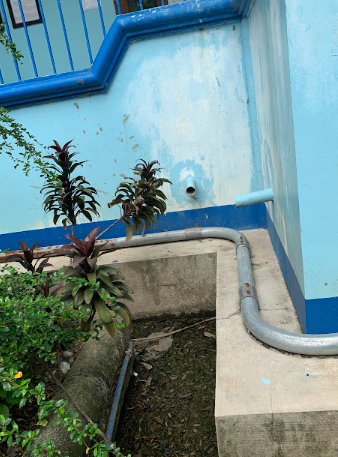
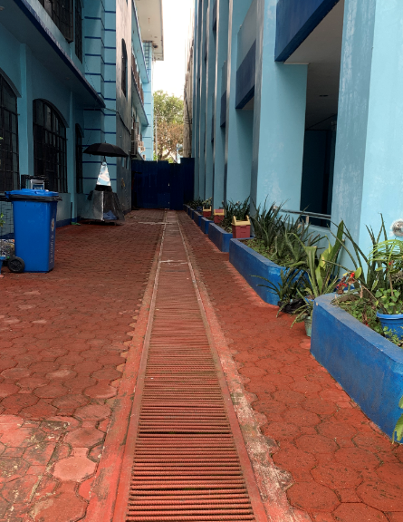
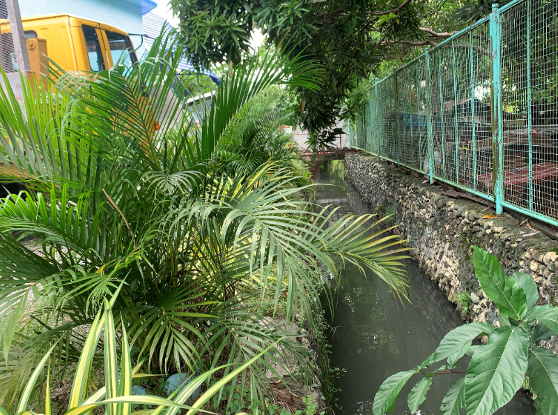
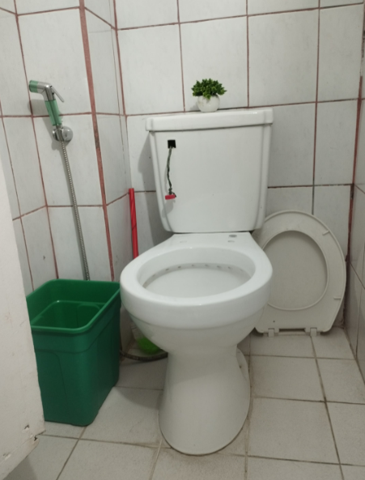

The Water Conservation Program of Urdaneta City University (UCU) has been strategically implemented in alignment with the criteria of the UI GreenMetric World University Rankings, particularly under the categories of Water (10%), Infrastructure, Education, and Research. The program demonstrates UCU’s commitment to sustainable water resource management through systematic reduction of potable water use, increased reliance on alternative water sources, and active engagement of the campus community.
A key strength of the program lies in its advanced rainwater harvesting and management system, which directly contributes to UI GreenMetric’s water criteria. The university has prioritized the regular inspection, maintenance, and upgrading of rainwater collection infrastructure to ensure optimal efficiency and sustainability. Expansion of storage facilities has significantly increased the capacity to capture and reuse rainwater. This harvested water is now integrated into daily campus operations, including landscape irrigation, toilet flushing, and cleaning activities, thereby reducing dependence on municipal or potable water sources. Continuous monitoring of water inflow, storage, and utilization ensures that the system operates efficiently while supporting data-driven decision-making.
| Rainwater Harvesting and Storage Infrastructure | |
|---|---|
| Harvesting Collector Systems | Rainwater Storage Tanks |
|
 Rainwater collection points and piping networks on academic buildings
|
 Dedicated bulk storage tanks capturing harvested runoff for campus reuse
|
| Harvested Rainwater Applications on Campus | |
|---|---|
| Water Irrigation | Toilet Flushing System |
|
 Active landscape irrigation utilizing harvested rainwater supplies
|
 Flushing systems in campus restrooms fed by alternative harvested water channels
|
To further align with UI GreenMetric’s emphasis on water conservation awareness and behavioral change, UCU has implemented a comprehensive information, education, and communication (IEC) strategy. Visible signages and reminders are strategically installed across campus to encourage responsible water use. Complementing these are regular seminars, workshops, and training sessions that promote water-saving practices among students, faculty, and staff. These initiatives are reinforced through digital campaigns, including social media posts, infographics, and electronic bulletin boards, which disseminate practical water conservation tips and encourage a culture of sustainability within the university community.
The program also emphasizes community involvement and institutional collaboration, which are essential elements of UI GreenMetric’s sustainability framework. The establishment of the Green Ambassador Initiative has empowered students and faculty members to serve as advocates of water conservation, fostering a shared sense of environmental responsibility. Volunteer programs and cross-departmental collaborations have further strengthened participation, ensuring that water conservation is not only a policy but a collective practice embedded in campus culture.
In terms of monitoring, evaluation, and reporting, UCU has developed a structured system to track water consumption and conservation performance. Water usage data—both potable and harvested—is regularly collected, analyzed, and documented in annual sustainability reports. These reports highlight key performance indicators, including reductions in water consumption, increases in rainwater utilization, and overall improvements in water-use efficiency. This systematic approach aligns with UI GreenMetric’s requirement for transparency, accountability, and continuous improvement in sustainability practices.
Furthermore, the program is supported by a clear governance and implementation framework. Responsibilities are distributed across designated personnel, with a Program Coordinator overseeing overall strategy and implementation, while specific teams handle infrastructure maintenance, advocacy, monitoring, and community engagement. This structured approach ensures the sustainability and scalability of the program.
The program is also strengthened through research and external partnerships, contributing to UI GreenMetric’s emphasis on academic and community impact. Collaborations with local government units, environmental organizations, and research institutions provide technical expertise, additional resources, and opportunities for innovation in water conservation strategies. These partnerships enhance both the practical implementation and academic relevance of the program.
Funded through internal allocations, grants, and external support, UCU’s Water Conservation Program has yielded measurable outcomes, including a significant reduction in potable water consumption, increased utilization of harvested rainwater, and heightened awareness and participation across the campus. These achievements reflect not only operational success but also a strong institutional commitment to sustainability, aligning UCU with global standards in environmental stewardship.
In conclusion, the Water Conservation Program of Urdaneta City University exemplifies a holistic and data-driven approach to sustainable water management. By integrating infrastructure development, education, community engagement, monitoring systems, and partnerships, the university demonstrates strong alignment with the UI GreenMetric World University Rankings, reinforcing its role as a leader in advancing environmental sustainability in higher education.